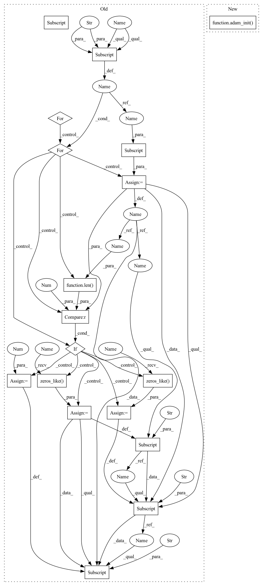

Pattern ID :28788

Before Change
// Ugly hack, init momentum buffer to zeros before we start
// State initialization
for pg in self.optimizer.param_groups:
for p in pg["params"]:
state = self.optimizer.state[p]
if len(state) == 0:
state["exp_avg"] = torch.zeros_like(
p.data, memory_format=torch.preserve_format)
state["exp_avg_sq"] = torch.zeros_like(
p.data, memory_format=torch.preserve_format)
state["step"] = 0
// NOTE: amsgrad is not supported.
def forward(self):
if not self.n_steps:
After Change
def __init__(self, *args, **kw):
super().__init__(*args, **kw)
adam_init(self.optimizer)
def forward(self):
if not self.n_steps:
return
In pattern: SUPERPATTERN
Frequency: 3
Non-data size: 18
Instances
Fragment ID: 84687313
Project Name: saareliad/ftpipe
Commit Name: b8f99fdf2646d6a1598d7142a4f67f4deff9eea0
Time: 2020-03-16
Author: saareliad@campus.technion.ac.il
File Name: pipeline/weight_prediction/adam.py
M Class Name: AdamClonedWeightPrediction
N Class Name: AdamClonedWeightPrediction
M Method Name: __init__(1)
N Method Name: __init__(1)
M Parent Class: WeightPredictor
N Parent Class: WeightPredictor
M File Name: pipeline/weight_prediction/adam.py
N File Name: pipeline/weight_prediction/adam.py
M Start Line: 13
M End Line: 24
N Start Line: 24
N End Line: 24
'>
Before Change
super().__init__(optimizer)
// State initialization
for pg in self.optimizer.param_groups:
for p in pg["params"]:
state = self.optimizer.state[p]
if len(state) == 0:
state["exp_avg"] = torch.zeros_like(
p.data, memory_format=torch.preserve_format)
state["exp_avg_sq"] = torch.zeros_like(
p.data, memory_format=torch.preserve_format)
state["step"] = 0
// // TODO: sched aware LR.
def apply_from_grad(self):
After Change
Apply Gap Aware on computed gradients
super().__init__(optimizer)
self.running_avg_step = init_running_avg_step(optimizer)
adam_init(optimizer)
// // TODO: sched aware LR.
def apply_from_grad(self):
'>
Fragment ID: 84687314
Project Name: saareliad/ftpipe
Commit Name: 5ab23421874eadce8bed648b3eebccce714c7271
Time: 2020-03-17
Author: saareliad@campus.technion.ac.il
File Name: pipeline/gap_aware/adamw_gap_aware.py
M Class Name: AdamWGapAware
N Class Name: AdamWGapAware
M Method Name: __init__(5)
N Method Name: __init__(5)
M Parent Class: GapAwareBase
N Parent Class: GapAwareBase
M File Name: pipeline/gap_aware/adamw_gap_aware.py
N File Name: pipeline/gap_aware/adamw_gap_aware.py
M Start Line: 52
M End Line: 64
N Start Line: 51
N End Line: 52
'>
Before Change
super().__init__(optimizer)
// State initialization
for pg in self.optimizer.param_groups:
for p in pg["params"]:
state = self.optimizer.state[p]
if len(state) == 0:
state["exp_avg"] = torch.zeros_like(
p.data, memory_format=torch.preserve_format)
state["exp_avg_sq"] = torch.zeros_like(
p.data, memory_format=torch.preserve_format)
state["step"] = 0
// // TODO: sched aware LR.
def apply_from_grad(self):
After Change
super().__init__(optimizer)
self.running_avg_step = init_running_avg_step(optimizer)
adam_init(optimizer)
// // TODO: sched aware LR.
def apply_from_grad(self):
Calculate gap aware from gradient. Requires knowing the exact gap
'>
Fragment ID: 84687315
Project Name: saareliad/ftpipe
Commit Name: 5ab23421874eadce8bed648b3eebccce714c7271
Time: 2020-03-17
Author: saareliad@campus.technion.ac.il
File Name: pipeline/gap_aware/adam_gap_aware.py
M Class Name: AdamGapAware
N Class Name: AdamGapAware
M Method Name: __init__(3)
N Method Name: __init__(3)
M Parent Class: GapAwareBase
N Parent Class: GapAwareBase
M File Name: pipeline/gap_aware/adam_gap_aware.py
N File Name: pipeline/gap_aware/adam_gap_aware.py
M Start Line: 21
M End Line: 33
N Start Line: 21
N End Line: 22